SURGICAL ANATOMY by JOSEPH MACLISE
COMMENTARY ON PLATES 63 & 64.
DEFORMITIES OF THE URINARY BLADDER.--THE OPERATIONS OF SOUNDING FOR
STONE, OF CATHETERISM AND OF PUNCTURING THE BLADDER ABOVE THE PUBES.
The urinary bladder presents two kinds of deformity--viz., congenital
and pathological. As examples of the former may be mentioned that in
which the organ is deficient in front, and has become everted and
protruded like a fungous mass through an opening at the median line of
the hypogastrium; that in which the rectum terminates in the bladder
posteriorly; and that in which the foetal urachus remains pervious as a
uniform canal, or assumes a sacculated shape between the summit of the
bladder and the umbilicus. The pathological deformities are, those in
which vesical fistulae, opening either above the pubes, at the
perinaeum, or into the rectum, have followed abscesses or the operation
of puncturing the bladder in these situations, and those in which the
walls of the organ appear thickened and contracted, or thinned and
expanded, or sacculated externally, or ridged internally, in consequence
of its having been subjected to abdominal pressure while overdistended
with its contents, and while incapable of voiding these from some
permanent obstruction in the urethral canal.[Footnote] The bladder is
liable to become sacculated from two causes--from a hernial protrusion
of its mucous membrane through the separated fasciculi of its fibrous
coat, or from the cyst of an abscess which has formed a communication
with the bladder, and received the contents of this organ. Sacs, when
produced in the former way, may be of any number, or size, or in any
situation; when caused by an abscess, the sac is single, is generally
formed in the prostate, or corresponds to the base of the bladder, and
may attain to a size equalling, or even exceeding, that of the bladder
itself. The sac, however formed, will be found lined by mucous membrane.
The cyst of an abscess, when become a recipient for the urine, assumes
after a time a lining membrane similar to that of the bladder. If the
sac be situated at the summit or back of the bladder, it will be found
invested by peritonaeum; but, whatever be its size, structure, or
position, it may be always distinguished from the bladder by being
devoid of the fibrous tunic, and by having but an indirect relation to
the vesical orifice.
[Footnote: On considering these cases of physical impediments to the
passage of urine from the vesical reservoir through the urethral
conduit, it seems to me as if these were sufficient to account for the
formation of stone in the bladder, or any other part of the urinary
apparatus, without the necessity of ascribing it to a constitutional
disease, such as that named the lithic
diathesis by the humoral
pathologists.
The urinary apparatus (consisting of the kidneys, ureters, bladder, and
urethra) is known to be the principal emunctory for eliminating and
voiding the detritus formed by the continual decay of the parts
comprising the animal economy. The urine is this detritus in a state of
solution. The components of urine are chemically similar to those of
calculi, and as the components of the one vary according to the
disintegration occurring at the time in the vital alembic, so do those
of the other. While, therefore, a calculus is only as urine precipitated
and solidified, and this fluid only as calculous matter suspended in a
menstruum, it must appear that the lithic diathesis is as natural and
universal as structural disintegration is constant and general in
operation. As every individual, therefore, may be said to void day by
day a dissolved calculus, it must follow that its form of precipitation
within some part of the urinary apparatus alone constitutes the disease,
since in this form it cannot be passed. On viewing the subject in this
light, the question that springs directly is, (while the lithic
diathesis is common to individuals of all ages and both sexes,) why the
lithic sediment should present in the form of concrement in some and not
in others? The principal, if not the sole, cause of this seems to me to
be obstruction to the free egress of the urine along the natural
passage. Aged individuals of the male sex, in whom the prostate is prone
to enlargement, and the urethra to organic stricture, are hence more
subject to the formation of stone in the bladder, than youths, in whom
these causes of obstruction are less frequent, or than females of any
age, in whom the prostate is absent, and the urethra simple, short,
readily dilatable, and seldom or never strictured. When an obstruction
exists, lithic concretions take place in the urinary apparatus in the
same manner as sedimentary particles cohere or crystallize elsewhere.
The urine becoming pent up and stagnant while charged with saline
matter, either deposits this around a nucleus introduced into it, or as
a surplus when the menstruum is insufficient to suspend it. The most
depending part of the bladder is that where lithic concretions take
place; and if a sacculus exist here, this, becoming a recipient for the
matter, will favour the formation of stone.] [End Footnote]
FIG. 1, Plate 63.--The lateral lobes of the prostate, 3, 4, are
enlarged, and contract the prostatic canal. Behind them the third lobe
of smaller size occupies the vesical orifice, and completes the
obstruction. The walls of the bladder have hence become fasciculated and
sacculated. One sac, 1, projects from the summit of the bladder;
another, 2, containing a stone, projects laterally. When a stone
occupies a sac, it does not give rise to the usual symptoms as
indicating its presence, nor can it be always detected by the sound.
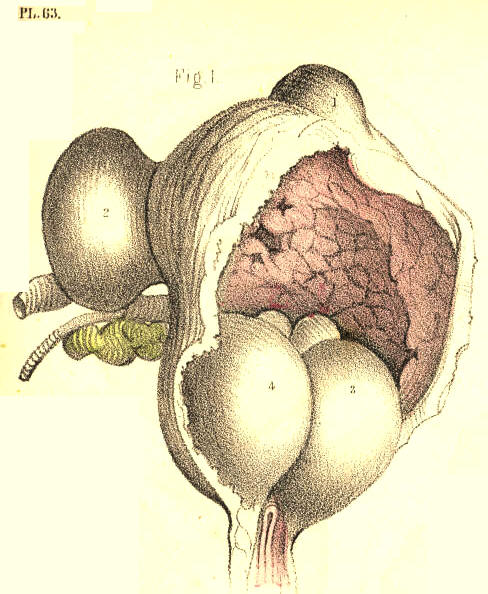
Plate 63,--Figure 1.
FIG. 2, Plate 63.--The prostate, 2, 3, is enlarged, and the middle lobe,
2, appears bending the prostatic canal to an almost vertical position,
and obstructing the vesical orifice. The bladder, 1, 1, 1, is thickened;
the ureters, 7, are dilated; and a large sac, 6, 6, projects from the
base of the bladder backwards, and occupies the recto-vesical fossa. The
sac, equal in size to the bladder, communicates with this organ by a
small circular opening, 8, situated between the orifices of the ureters.
The peritonaeum is reflected from the summit of the bladder to that of
the sac. A catheter, 4, appears perforating the third lobe of the
prostate, 2, and entering the sac, 5, through the base of the bladder,
below the opening, 8. In a case of this kind, a catheter occupying the
position 4, 5, would, while voiding the bladder through the sac, make it
seem as if it really traversed the vesical orifice. If a stone occupied
the bladder, the point of the instrument in the sac could not detect it,
whereas, if a stone lay within the sac, the instrument, on striking it
here, would give the impression as if it lay within the bladder.
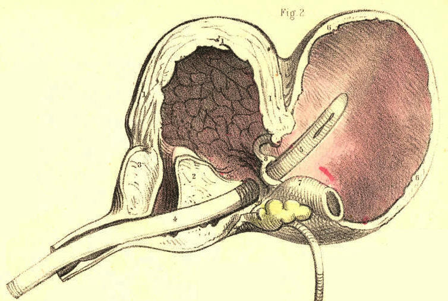
Plate 63,--Figure 2.
FIG. 3, Plate 63.--The urethra being strictured, the bladder has become
sacculated. In the bas fond of the bladder appears a circular opening,
2, leading to a sac of large dimensions, which rested against the
rectum. In such a case as this, the sac, occupying a lower position than
the base of the bladder, must first become the recipient of the urine,
and retain this fluid even after the bladder has been evacuated, either
voluntarily or by means of instruments. If, in such a state of the
parts, retention of urine called for puncturation, it is evident that
this operation would be performed with greater effect by opening the
depending sac through the bowel, than by entering the summit of the
bladder above the pubes.
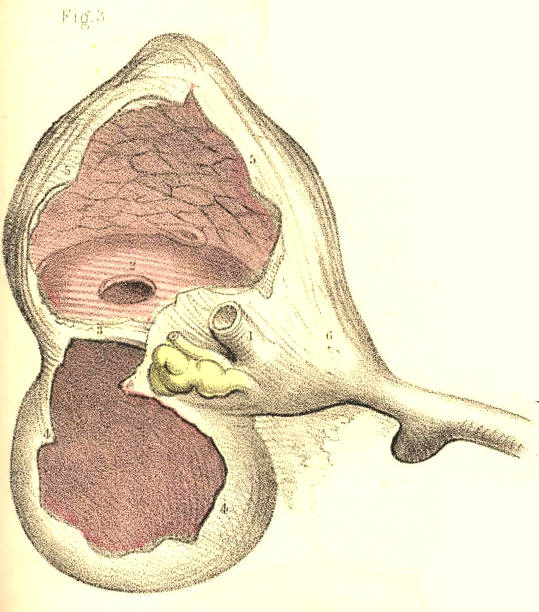
Plate 63,--Figure 3.
FIG. 4, Plate 63.--The vesical orifice is obstructed by two portions, 3,
4, of the prostate, projecting upwards, one from each of its lateral
lobes, 6, 6. The bladder is thickened and fasciculated, and from its
summit projects a double sac, 1, 2, which is invested by the
peritonaeum.
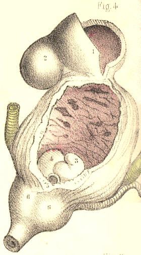
Plate 63,--Figure 4.
FIG. 5, Plate 63.--The prostatic canal is constricted and bent upwards
by the third lobe. The bladder is thickened, and its base is dilated in
the form of a sac, which is dependent, and upon which rests a calculus.
An instrument enters the bladder by perforating the third lobe, but does
not come into contact with the calculus, owing to the low position
occupied by this body.
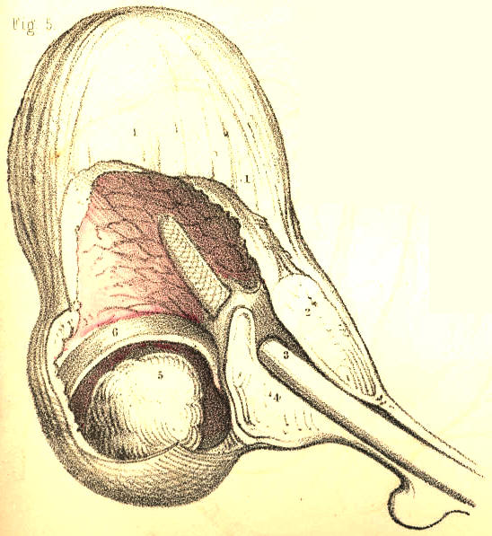
Plate 63,--Figure 5.
FIG. 6, Plate 63.--Two sacs appear projecting on either side of the base
of the bladder. The right one, 5, contains a calculus, 6; the left one,
of larger dimensions, is empty. The rectum lay in contact with the base
of the bladder between the two sacs.
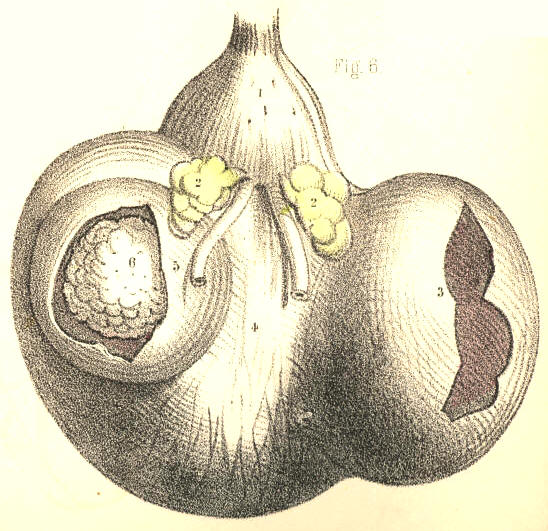
Plate 63,--Figure 6.
FIG. 7, Plate 63.--Four calculi are contained in the bladder. This organ
is divided by two septa, 2, 4, into three compartments, each of which,
1, 3, 5, gives lodgment to a calculus; and another, 6, of these bodies
lies impacted in the prostatic canal, and becomes a complete bar to the
passage of a catheter. Supposing lithotomy to be performed in an
instance of this kind, it is probable that, after the extraction of the
calculi, 6, 5, the two upper ones, 3, 1, would, owing to their being
embedded in the walls of the bladder, escape the forceps.
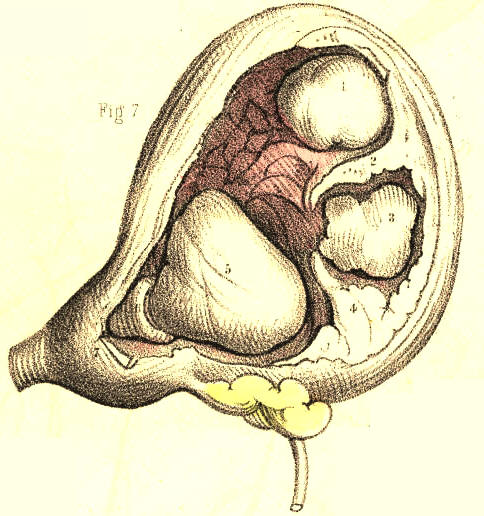
Plate 63,--Figure 7.
FIG. 8, Plate 63.-Two large polypi, and many smaller ones, appear
growing from the mucous membrane of the prostatic urethra and vesical
orifice, and obstructing these parts. In examining this case during life
by the sound, the two larger growths, 1, 2, were mistaken by the surgeon
for calculi. Such a mistake might well be excused if they happened to be
encrusted with lithic matter.
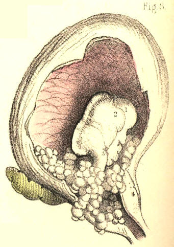
Plate 63,--Figure 8.
FIG. 9, Plate 63.--The base of the bladder, 8, 8, appears dilated into a
large uniform sac, and separated from the upper part of the organ by a
circular horizontal fold, 2, 2. The ureters are also dilated. The left
ureter, 3, 4, opens into the sac below this fold, while the right ureter
opens above it into the bladder. In all cases of retention of urine from
permanent obstruction of the urethra, the ureters are generally found
more or less dilated. Two circumstances combine to this effect--while
the renal secretion continues to pass into the ureters from above, the
contents of the bladder under abdominal pressure are forced
regurgitating into them from below, through their orifices.
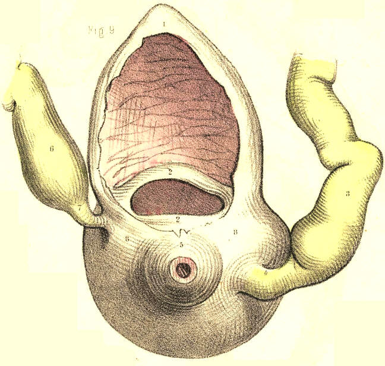
Plate 63,--Figure 9.
FIG. 1, Plate 64.--The bladder, 6, appears symmetrically sacculated. One
sac, 1, is formed at its summit, others, 3, 2, project laterally, and
two more, 5, 4, from its base. The ureters, 7, 7, are dilated, and enter
the bladder between the lateral and inferior sacs.
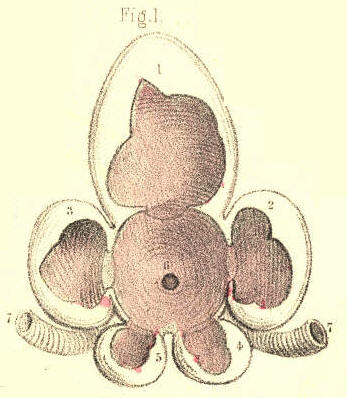
Plate 64,--Figure 1.
Fig. 2, Plate 64.--The prostate is greatly enlarged, and forms a narrow
ring around the vesical orifice. Through this an instrument, 12, enters
the bladder. The walls of the bladder are thickened and sacculated. On
its left side appear numerous sacs, 2, 3, 4, 5, 6, 7, 8, and on the
inner surface of its right side appear the orifices of as many more. On
its summit another sac is formed. The ureters, 9, are dilated.
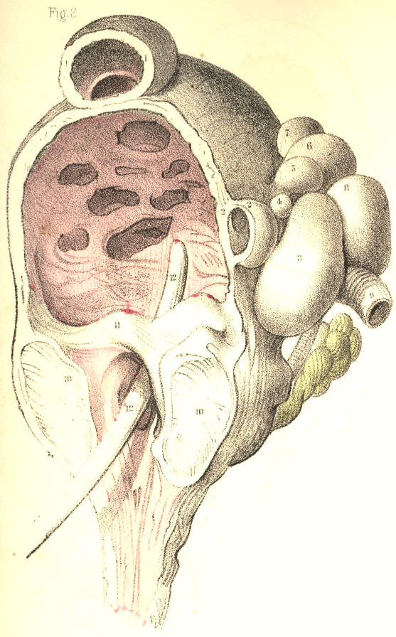
Plate 64,--Figure 2.
FIG. 3, Plate 64.--The prostate is enlarged, its canal is narrowed, and
the bladder is thickened and contracted. A calculus, 1, 2, appears
occupying nearly the whole vesical interior. The incision in the neck of
the bladder in lithotomy must necessarily be extensive, to admit of the
extraction of a stone of this size.
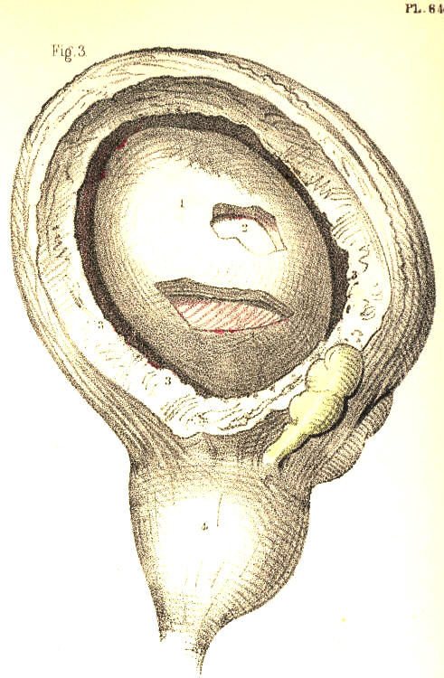
Plate 64,--Figure 3.
FIG. 4, Plate 64.--The prostatic canal is contracted by the lateral
lobes, 4, 5; resting upon these, appear three calculi, 1, 2, 3, which
nearly fill the bladder. This organ is thickened and fasciculated. In
cases of this kind, and that last mentioned, the presence of stone is
readily ascertainable by the sound.
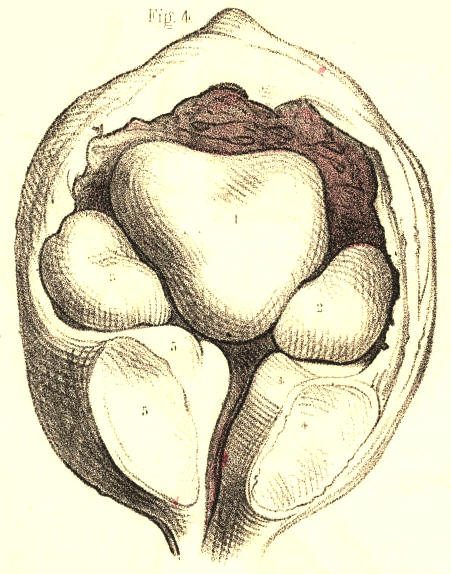
Plate 64,--Figure 4.
FIG. 5, Plate 64.--The three prostatic lobes are enlarged, and appear
contracting the vesical orifice. In the walls of the bladder are
embedded several small calculi, 2, 2, 2, 2, which, on being struck with
the convex side of a sound, might give the impression as though a single
stone of large size existed. In performing lithotomy, these calculi
would not be within reach of the forceps.
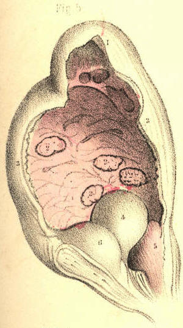
Plate 64,--Figure 5.
FIG. 6, Plate 64.--Two sacculi, 4, 5, appear projecting at the middle
line of the base of the bladder, between the vasa deferentia, 7, 7, and
behind the prostate, in the situation where the operation of puncturing
the bladder per anum is recommended to be performed in retention of
urine.
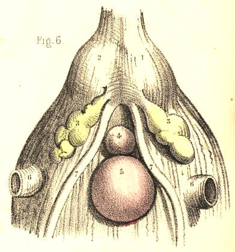
Plate 64,--Figure 6.
FIG. 7, Plate 64.--A sac, 4, is situated on the left side of the
bladder, 3, 3, immediately above the orifice of the ureter. In the sac
was contained a mass of phosphatic calculus. This substance is said to
be secreted by the mucous lining of the bladder, while in a state of
chronic inflammation, but there seems nevertheless very good reason for
us to believe that it is, like all other calculous matter, a deposit
from the urine.
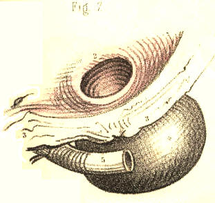
Plate 64,--Figure 7.
FIG. 8, Plate 64, represents, in section, the relative position of the
parts concerned in catheterism. [Footnote] In performing this operation,
the patient is to be laid supine; his loins are to be supported on a
pillow; and his thighs are to be flexed and drawn apart from each other.
By this means the perinaeum is brought fully into view, and its
structures are made to assume a fixed relative position. The operator,
standing on the patient's left side, is now to raise the penis so as to
render the urethra, 8, 8, 8, as straight as possible between the meatus,
a, and the bulb, 7. The
instrument (the concavity of its curve being
turned to the left groin) is now to be inserted into the meatus, and
while being gently impelled through the canal, the urethra is to be
drawn forwards, by the left hand, over the instrument. By stretching the
urethra, we render its sides sufficiently tense for facilitating the
passage of the instrument, and the orifices of the lacunae become
closed. While the instrument is being passed along this part of the
canal, its point should be directed fairly towards the urethral opening,
6*, of the triangular ligament, which is situated an inch or so below
the pubic symphysis, 11. With this object in view, we should avoid
depressing its handle as yet, lest its point be prematurely tilted up,
and rupture the upper side of the urethra anterior to the ligament. As
soon as the instrument has arrived at the bulb, its further progress is
liable to be arrested, from these causes:--1st, This portion of the
canal is the lowest part of its perinaeal curve, 3, 6, 8, and is closely
embraced by the middle fibres of the accelerator urinae muscle. 2nd, It
is immediately succeeded by the commencement of the membranous urethra,
which, while being naturally narrower than other parts, is also the more
usual seat of organic stricture, and is subject to spasmodic
constriction by the fibres of the compressor urethrae. 3d, The
triangular ligament is behind it, and if the urethral opening of the
ligament be not directly entered by the instrument, this will bend the
urethra against the front of that dense structure. On ascertaining these
to be the causes of resistance, the instrument is to be withdrawn a
little in the canal, so as to admit of its being readjusted for engaging
precisely the opening in the triangular ligament. As this structure, 6,
is attached to the membranous urethra, 6*, which perforates it, both
these parts may be rendered tense, by drawing the penis forwards, and
thereby the instrument may be guided towards and through the aperture.
The instrument having passed the ligament, regard is now to be paid to
the direction of the pelvic portion of the canal, which is upwards and
backwards to the vesical orifice, 3, d,
3. In order that the point of
the instrument may freely traverse the urethra in this direction, its
handle, a, requires to be
depressed, b c, slowly towards
the perinaeum,
and at the same time to be impelled steadily back in the line d, d,
through the pubic arch, 11. If the third lobe of the prostate happen to
be enlarged, the vesical orifice will accordingly be more elevated than
usual. In this case, it becomes necessary to depress the instrument to a
greater extent than is otherwise required, so that its point may
surmount the obstacle. But since the suspensory ligament of the penis,
10, and the perinaeal structures prevent the handle being depressed
beyond a certain degree, which is insufficient for the object to be
attained, the instrument should possess the prostatic curve, c c,
compared with c b.
[Footnote: It may be necessary for me to state that, with the exception
of this figure (which is obviously a plan, but sufficiently accurate for
the purposes it is intended to serve) all the others representing
pathological conditions and congenital deformities of the urethra, the
prostate, and the bladder, have been made by myself from natural
specimens in the museums and
hospitals of London and Paris.]
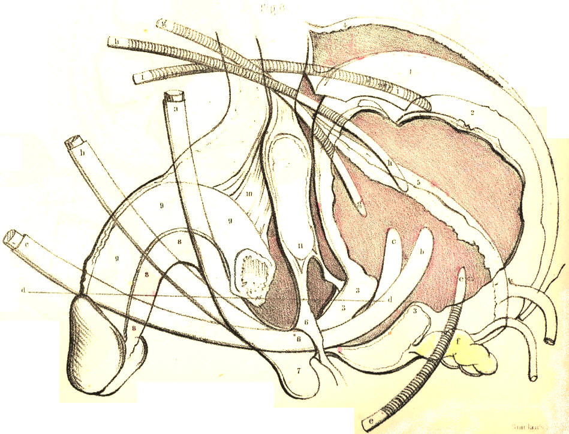
Plate 64,--Figure 8.
In the event of its being impossible to pass a catheter by the urethra,
in cases of retention of urine threatening rupture, the base or the
summit of the bladder, according as either part may be reached with the
greater safety to the peritonaeal sac, will require to be punctured. If
the prostate be greatly and irregularly enlarged, it will be safer to
puncture the bladder above the pubes, and here the position of the organ
in regard to the peritonaeum, 1, becomes the chief consideration. The
shape of the bladder varies very considerably from its state of
collapse, 3, 3, 5, to those of mediate, 3, 3, 2, 1, and extreme
distention, 3, 3, 4. This change of form is chiefly effected by the
expansive elevation of its upper half, which is invested by the
peritonaeum. As the summit of the bladder falls below, and rises above
the level of the upper margin of the pubic symphysis, it carries the
peritonaeum with it in either direction. While the bladder is fully
expanded, 4, there occurs an interval between the margin of the
symphysis pubis and the point of reflexion of the peritonaeum, from the
recti muscles, to the summit of the viscus. At this interval, close to
the pubes, and in the median line, the trocar may be safely passed
through the front wall of the bladder. The instrument should, in all
cases, be directed downwards and backwards, h, h, in a line pointing to
the hollow of the sacrum.
COMMENTARY ON PLATES 65
& 66